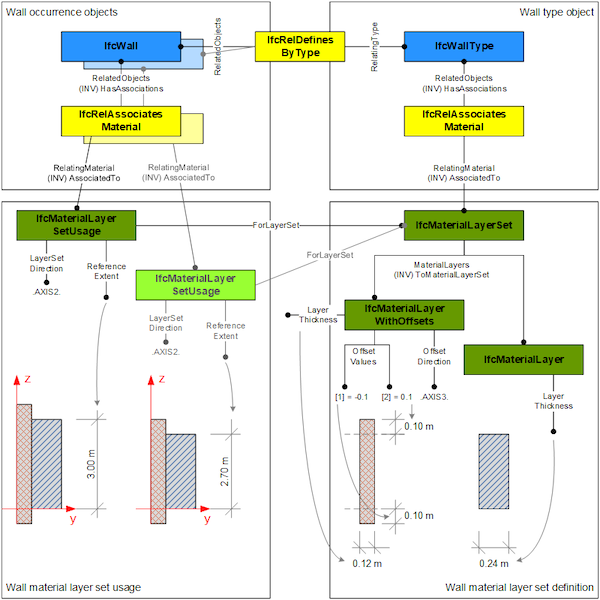

8.10.3.9 IfcMaterialLayerWithOffsets
8.10.3.9.1 Semantic definition
IfcMaterialLayerWithOffsets is a specialization of IfcMaterialLayer enabling definition of offset values along edges (within the material layer set usage in parent layer set).
It defines the assignment of two offset values for a material layer in its intended use within a material layer set. Offsets are applied to the edges of layered elements (that is, in directions perpendicular to the layer set direction). Offsets shall not be used in layer set direction, that is, for modelling gaps (or overlaps) between layers; gaps shall be modeled as layers with appropriate material assignment for the void.
Take a layered wall with the outer material layer for the external isolation extending above extrusion by 100mm, but starting at the same base height. In this case the following values are set: > * OffsetDirection = .AXIS3. * OffsetValues[1] = 0.0 * OffsetValues[2] = 100.0 (default unit assumed to be mm)
Informal Propositions
-
The OffsetDirection shall not be identical to the LayerSetDirection of the corresponding IfcMaterialLayerSetUsage.
-
The attribute ReferenceExtent shall be asserted at the corresponding IfcMaterialLayerSetUsage.
{ .use-head} The OffsetValues and OffsetDirection correspond to the definitions ReferenceExtent and LayerSetDirection at the IfcMaterialLayerSetUsage. Figure A shows an example of applying the OffsetValues to the material layers of a layered wall.

8.10.3.9.2 Entity inheritance
8.10.3.9.3 Attributes
| # | Attribute | Type | Description |
|---|---|---|---|
| IfcMaterialDefinition (3) | |||
| AssociatedTo | SET [0:?] OF IfcRelAssociatesMaterial FOR RelatingMaterial |
Use of the IfcMaterialDefinition subtypes within the material association of an element occurrence or element type. The association is established by the IfcRelAssociatesMaterial relationship. |
|
| HasExternalReferences | SET [0:?] OF IfcExternalReferenceRelationship FOR RelatedResourceObjects |
Reference to external references, e.g. library, classification, or document information, that are associated to the material. |
|
| HasProperties | SET [0:?] OF IfcMaterialProperties FOR Material |
Material properties assigned to instances of subtypes of IfcMaterialDefinition. |
|
| IfcMaterialLayer (8) | |||
| 1 | Material | OPTIONAL IfcMaterial |
Optional reference to the material from which the layer is constructed. Note that if this value is not given, it does not denote a layer with no material (an air gap), it only means that the material is not specified at that point. |
| 2 | LayerThickness | IfcNonNegativeLengthMeasure |
The thickness of the material layer. The meaning of "thickness" depends on its usage. In case of building elements elements utilizing IfcMaterialLayerSetUsage, the dimension is measured along the positive LayerSetDirection as specified in IfcMaterialLayerSetUsage. |
| 3 | IsVentilated | OPTIONAL IfcLogical |
Indication of whether the material layer represents an air layer (or cavity). * set to TRUE if the material layer is an air gap and provides air exchange from the layer to the outside air. * set to UNKNOWN if the material layer is an air gap and does not provide air exchange (or when this information about air exchange of the air gap is not available). * set to FALSE if the material layer is a solid material layer (the default). |
| 4 | Name | OPTIONAL IfcLabel |
The name by which the material layer is known. |
| 5 | Description | OPTIONAL IfcText |
Definition of the material layer in more descriptive terms than given by attributes Name or Category. |
| 6 | Category | OPTIONAL IfcLabel |
Category of the material layer, e.g. the role it has in the layer set it belongs to (such as 'load bearing', 'thermal insulation' etc.). The list of keywords might be extended by model view definitions, however the following keywords shall apply in general: * 'LoadBearing' — for all material layers having a load bearing function. * 'Insulation' — for all material layers having an insolating function. * 'Inner finish' — for the material layer being the inner finish. * 'Outer finish' — for the material layer being the outer finish. |
| 7 | Priority | OPTIONAL IfcInteger |
The relative priority of the layer, expressed as normalised integer range [0..100]. Controls how layers intersect in connections and corners of building elements: a layer from one element protrudes into (i.e. displaces) a layer from another element in a joint of these elements if the former element's layer has higher priority than the latter. The priority value for a material layer in an element has to be set and maintained by software applications in relation to the material layers in connected elements. |
| ToMaterialLayerSet | IfcMaterialLayerSet FOR MaterialLayers |
Reference to the IfcMaterialLayerSet in which the material layer is included. |
|
| Click to show 11 hidden inherited attributes Click to hide 11 inherited attributes | |||
| IfcMaterialLayerWithOffsets (2) | |||
| 8 | OffsetDirection | IfcLayerSetDirectionEnum |
Orientation of the offset; shall be perpendicular to the parent layer set direction. |
| 9 | OffsetValues | ARRAY [1:2] OF IfcLengthMeasure |
The numerical value of layer offset, in the direction of the axis assigned by the attribute OffsetDirection. The OffsetValues[1] identifies the offset from the lower position along the axis direction (normally the start of the layer extrusion), the OffsetValues[2] identifies the offset from the upper position along the axis direction (normally the end of the layer extrusion). |
8.10.3.9.4 Formal representation
ENTITY IfcMaterialLayerWithOffsets
SUBTYPE OF (IfcMaterialLayer);
OffsetDirection : IfcLayerSetDirectionEnum;
OffsetValues : ARRAY [1:2] OF IfcLengthMeasure;
END_ENTITY;